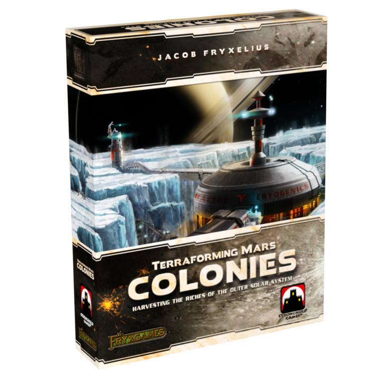

Terraforming Mars: Colonies
Jacob Fryxelius & Jonathan Fryxelius · 2018 · Expansion for Terraforming Mars

Colonies at a Glance
At the center of Colonies is a shared colony-and-trade market that enters the base game's existing economy. Each session uses a selection from 11 colony tiles. Players may spend 17 M€ to establish a colony, gaining an immediate placement bonus and a claim on future owner rewards, or send a trade fleet to an unoccupied tile by paying 9 M€, three energy, or three titanium. The trader takes the tile's accumulated income, while every player established there receives a smaller colony bonus.
In quality, Colonies earns an S tier. Its central mechanism is outstanding in conception, execution, integration, and the value it returns for its added burden. The box adds recurring administration, limited colony spaces can create some turn-order friction, and a small amount of its card and corporation content bends the system less cleanly. Those limitations are noticeable in play, but remain secondary to the quality of its central mechanism.
Its separate enable recommendation is Usually Include. Colonies is not the best default for a first teaching game, because it asks newcomers to value another layer of investment and timing before they know the base economy. Once that baseline is established, however, the additional decisions earn a place in almost every session.
This review covers the original 2018 box: its 49 project cards and five corporations are considered alongside the central system, while later promotional cards and cross-expansion material remain outside its scope.
An Action Inside The Existing Economy
Colonies inserts another action directly into the economy that already drives Terraforming Mars. Money, energy, and titanium can all fund trade; cards can alter those costs or expand access; the resulting resources return immediately to the same engines, projects, and timing decisions. The colony market therefore changes the base game's decision network without requiring a separate economy beside it.
Building a colony and trading are two independent decisions. A player does not need a colony in order to trade. Spending 17 M€ buys an immediate placement bonus and a claim on future owner bonuses whenever someone visits that tile; declining to build preserves liquidity while leaving the public trade income available. Colony construction is therefore a long-term investment rather than an entry fee for using the trade market.
Competition And Mutual Benefit In The Same Market
The shared economy is one of the expansion's best ideas. Colony owners want other players to visit their tile because every trade pays them an owner bonus. The visitor wants the larger accumulated income, but trading consumes that value and blocks the tile from another fleet for the rest of the generation. Players therefore compete for access and timing while also creating income for one another. Cooperation and competition are not separate modes here; they are produced by the same action.
Some colony tiles are stronger than others, but those stronger opportunities are visible and available to the whole table. Everyone can plan around the same trade income. The relevant asymmetry appears when colony spaces become scarce: each tile normally holds only three colonies, so later players can lose access to a highly desirable investment. Trade order is less severe. The first player can act first, but committing an early action to trade is not always efficient, and first-player order rotates between generations.
Three-Energy Trade And The Production Threshold
Trade gives energy a new three-unit threshold and develops one of Terraforming Mars's strongest design habits: resources change meaning when they cross a threshold. Eight plants create a resource-level phase change. Players can assemble them gradually through production, cards, and other gains, then convert the stored total into a greenery.
Energy behaves differently. Under normal production, stored energy becomes heat before new energy is generated, so it usually cannot accumulate across generations in the same way as plants. Reaching the three-energy trade cost therefore depends mainly on bringing energy production itself across the threshold. This moves the phase change from stored resources into production capacity. It also preserves the original energy-to-heat relationship: energy creates an immediate trading opportunity, then still feeds the delayed heat economy later.
With a strong colony available, three energy production can approach nine money production. Requiring all three energy keeps the use from becoming freely available, while trade-cost reductions create alternative routes into or below the threshold. Energy becomes more useful, and production, energy, trade, and heat now form a more dimensional chain.
A Richer Middle With Minor Added Friction
Colonies speeds up and slows down different parts of the game. Extra resources can bring engines online sooner and make expensive projects easier to fund. At the same time, trade adds another valuable action, another investment route, and more reasons to keep developing instead of advancing the three ending parameters. In practice those forces largely offset each other. The overall ending pace remains similar, while the route taken through the middle of the game becomes richer.
The added project cards and corporations generally speak the same economic language as the central system, but they are not equally clean. A few effects grant additional fleets or relax ordinary colony limits, bending scarcity more sharply than a simple discount; corporation strength is also uneven. Returning fleets and advancing colony markers add a small recurring procedure each generation. These are real imperfections, but they remain local. They make the box less clean than its central mechanism without changing how strongly that mechanism enriches most sessions.
Final Recommendation
A newcomer can manage the individual rules, but colony construction, three trade payment options, accumulated income, owner bonuses, fleet occupancy, and colony recovery together create a second layer of valuation before the base economy is established. Colonies is therefore better introduced after the first play.
To judge whether a 17 M€ colony is a sound investment, or whether a trade is worth 9 M€, three energy, or three titanium, it helps to understand the normal value, timing, and future uses of those resources first. A newcomer can still use the system without that baseline, but cannot yet compare its opportunity costs as clearly or appreciate what the expansion changes. Once the group knows the base engine, the recurring procedure is quick and the new decisions earn their place in almost every session.
The recommendation is therefore Usually Include, and the quality tier is S. Colonies adds a new action without isolating it from the base game, turns a public market into both competition and mutual benefit, and develops the resource model through a production-level threshold. Few expansions add this much strategic structure while remaining so faithful to the system they expand.